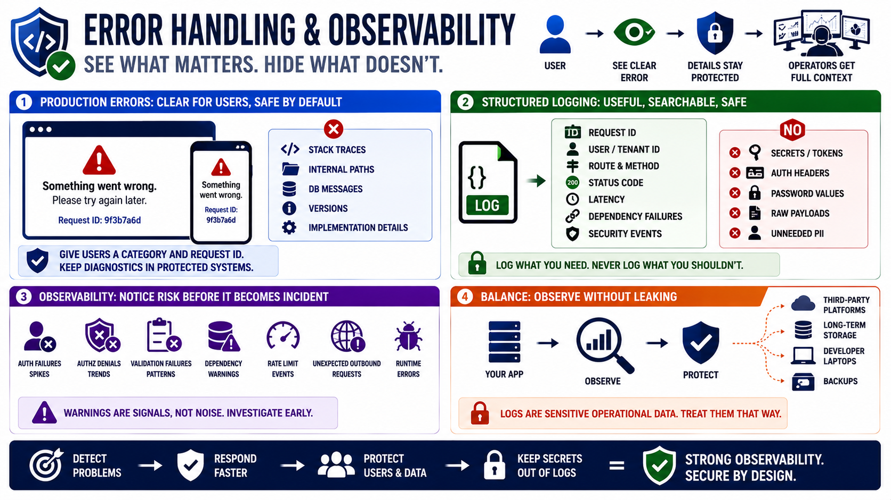

Error Handling, Logging, and Observability
Connecting to LMS... Progress: in progress

Narration
Error handling should help operators understand failures without exposing internals to users. Production responses should avoid stack traces, internal file paths, dependency versions, database messages, and implementation details. A user can receive a clear error category and request identifier while the detailed diagnostic information remains in protected operational systems.
Structured logging helps teams search, alert, and investigate behavior across services. Useful fields may include request IDs, user or tenant identifiers where appropriate, route names, status codes, latency, dependency failures, and security-relevant events. The logging design should avoid secrets, session tokens, authorization headers, password values, raw sensitive payloads, and personally sensitive data that is not needed for operations.
Observability is also part of incident response readiness. A Node.js service should make it possible to notice unusual authentication failures, authorization denials, validation failures, dependency warnings, rate-limit events, unexpected outbound requests, and runtime errors. Dependency and runtime warnings should not be ignored simply because the service appears to work. They may signal security or reliability drift.
The balance is to understand behavior without turning logs into a data leak. Logs often travel to third-party platforms, shared dashboards, long-term storage, backups, or developer laptops. Treat logs as sensitive operational data. Good observability helps teams detect and respond to problems while preserving privacy, protecting secrets, and keeping production details out of untrusted responses.